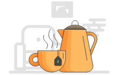
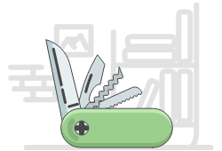

Task management and lists tool
We believe that designing products and services in close
partnership with our clients is the only way to have a real
impact on their business.
Featured Service that We Provide
-

Keep tasks in
one placeSave time, avoid losing work and information, delegate, and track tasks to stay on schedule
-
Keep tasks in
one placeSave time, avoid losing work and information, delegate, and track tasks to stay on schedule
-

Keep tasks in
one placeSave time, avoid losing work and information, delegate, and track tasks to stay on schedule
Why do you need
task management software?
Do you waste time organizing sticky notes, searching your email and apps for to-dos, and figuring out what to work on first? Then you need one solution to prioritize your tasks, manage your time, and meet your deadlines.

Get better work done
See why millions of people across 195 countries use Dash.